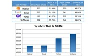

Siri está a punto de sacarse el título de japonés para usarlo en el IPhone 4S
Wed, 15 Feb 2012 11:16:10 GMT

Siri, asistente de voz que Apple ha estrenado en el iPhone 4S, está a punto de actualizarse. No sabemos si será con el motivo de la salida del nuevo iPad, o de la actualización a iOS 5.1 que puede llegar en menos de un mes. Pero lo cierto es que una de las novedades va a ser la compatibilidad con el idioma japonés, ya que el mismo Siri admite que sabe hablarlo cuando el idioma aún no se puede usar (por el momento tenemos varios dialectos del inglés, el francés y el alemán).
Si tenéis un iPhone 4S con Siri activado, preguntadle qué lenguajes sabe hablar. Su respuesta será la siguiente:
Puedo hablar francés, inglés, japonés, alemán… pero siempre estoy aprendiendo.
El japonés no debería estar en esa respuesta, pero ahí lo tenemos. Suena a que desde Cupertino ya han preparado al asistente para una próxima actualización.
Apple confirmó a su manera que Siri hablará castellano a lo largo de este año, pero si le dan prioridad al japonés yo no lo esperaría para pronto. Quizás dentro de unos meses, aprovechando el lanzamiento del iPhone de próxima generación. O quizás soy demasiado pesimista y vendrá de la mano del japonés, quién sabe. Por si acaso, id ensayando esas frases de chiquito de la calzada para confundir a Siri de la mejor forma posible.
Vía | Applesfera > 9to5mac
En Genbeta | Siri al descubierto

HP publica en código abierto Isis, el navegador de WebOS
Tue, 14 Feb 2012 23:30:00 GMT
Está claro que la compra de WebOS por parte de HP no fue precisamente el negocio del siglo, pero al menos ha tenido como interesante consecuencia la decisión de liberar su código para mantener vivo el sistema de la mano de la comunidad. El primer paso en ese sentido se dio hace unas semanas con la liberación de su framework de aplicaciones.
Hoy la compañía ha seguido avanzando en este camino al ofrecer abiertamente el código de Isis, su navegador web, dando rienda suelta a un proyecto del que podéis encontrar más información en su web oficial. Este navegador está basado en QtWebKit, una adaptación del popular motor WebKit empleando el framework Qt.
El objetivo de HP es tener lista la liberación completa del sistema en septiembre, pero por el camino irán cayendo más aperturas de sus componentes. Cuando llegue el momento, el reconvertido sistema pasará a llamarse Open WebOS, aunque aún está por ver las aplicaciones reales que puede llegar a tener en un terreno donde la competencia es tan agresiva.
Vía | HP webOS Developer Blog
En Genbeta | HP avanza en la liberación de webOS, que llegará en septiembre, HP evita la muerte de WebOS liberando su código fuente
LibreOffice coge velocidad de crucero con la nueva versión 3.5
Tue, 14 Feb 2012 21:30:00 GMT
Ya hemos ido comentando desde el nacimiento las evoluciones de LibreOffice y en concreto las últimas mejoras que venían anunciando en lo que respecta a la depuración del código. Tal y como anunciaron estas mejoras que iban orientadas a dar el salto a la nube también se notarían en la versión de escritorio con la llegada de la nueva versión. Y lo cierto es que LibreOffice coge velocidad de crucero con la nueva versión 3.5 mejorando notablemente la velocidad de ejecución de la suite ofimática.
Pero las novedades no se quedan sólo a nivel interno sino que han ido añadiendo un buen puñado de funcionalidades para mejorar determinados aspectos de cada uno de los programas y de la suite en general. Entre estas últimas podemos citar como muy interesante el cambio en el sistema de actualizaciones que facilitará la revisión de forma periódica en busca de nuevas versiones. Vamos a ver un poco más en detalle que cambios nos ofrece:
Writer, mejora la corrección gramatical

En el caso del editor de textos las mejoras introducidas son numerosas. Ninguna de ellas es revolucionaria pero en conjunto de dan un buen empujón para que funcionen mejor algunos aspectos como los siguientes:
-
Encabezados y pies de página que se han rediseñado para que sea más sencillo visualizarlos y editarlos. Además la división entre las páginas ha mejorado.
-
Corrector gramatical que ahora es más rápido y podemos añadir una URL para que nos de más detalles sobre el error gramatical o sintáctico que hemos cometido. Una opción que puede ser muy didáctica si la utilizamos bien.
-
Recuento de palabras y nuevas tipografías añadidas. En el primer caso se trata de actualizar el contador en tiempo real.
Calc, ahora con posibilidad de más hojas
En el caso de la hoja de cálculo de LibreOffice las mejoras han ido sobre todo para mejorar el soporte al número de hojas que puede contener un documento, que ahora aumenta hasta las 10.000. A su vez ha mejorado el soporte a la hora de importar hojas de cálculo desde otros programas compatibles, tratando de reducir los problemas de visualización y funcionalidad con los mismos. Por otra parte incluye nuevas fórmulas ajustadas a las especificaciones de ODF OpenFormula. También añade la opción multilínea en una celda para facilitar añadir el contenido de una manera más adecuada. Por último ha mejorado las opciones de filtrado y formato condicional.
Impress, una mejor importación de documentos

En el caso de la aplicación para las presentaciones es una de las que necesita un buen empujón para llegar a competir en funcionalidad y facilidad para crear presentaciones si la comparamos con PowerPoint. En este caso ha mejorado la importación de formas en las diapositivas que vienen de la suite de Microsoft. Además añade una nueva paleta de colores para las diapositivas. Todas están enfocadas a mejorar la compatibilidad con otros documentos creados con programas distintos y a la vez para mejorar la función de importar documentos de Visio. A la vez han mejorado las opciones para mejorar el manejo de las presentaciones tanto en el equipo como en el proyector.
Base
En este caso son pocas las novedades. Nada más podemos destacar la posibilidad de integración con controlador nativo de PostgreSQL. Aunque el controlador es todavía en fase beta, pero funciona bien aseguran que más rápido que otras alternativas como JDBC u ODBC para funciones básicas.
Una mejora general de velocidad
Lo cierto es que las mejoras a nivel interno y la corrección de errores parece que van por buen camino. La velocidad de ejecución ha mejorado de forma significativa. Les queda un camino todavía muy largo por recorrer pero parece que han iniciado la andadura con buen pie. Recordemos que LibreOffice 3.5 será la base de las versiones web y móviles que veremos este año. Pero también es importante la llegada de las actualizaciones automáticas a LibreOffice de manera que tenga una continuidad con la menor intervención del usuario. Quizás ahora que han mejorado parte de su funcionamiento interno la asignatura pendiente es un rediseño de la interfaz, algo que siempre resulta controvertido y no deja contento siempre a todos. Veremos si los cambios efectuados para su adaptación a la web y los dispositivos móviles también se dejan ver en el escritorio.
Gracias a Manu por el aviso
Más Información | LibreOffice
En Genbeta | LibreOffice deja ver la versión móvil y web de la suite ofimática
La aplicación de Google+ para iOS se actualiza incluyendo la subida instantánea de fotos
Tue, 14 Feb 2012 20:17:00 GMT
Desde que hizo su aparición Google+, una de las características que recibía más promoción era la de poder subir fotos al servicio apenas las tomásemos. Esto tan sólo era posible en la aplicación de Android, pero en la actualización que han hecho de la aplicación para iOS ahora ya podemos hacerlo desde los dispositivos de Apple.
La subida automática implica que, mientras tengamos abierta la aplicación de Google+ (y un poco de tiempo después de cerrarla, según dicen ellos mismos), toda foto o vídeo que hagamos se subirá automáticamente a un álbum privado en espera de si queremos o no compartirlo.
Ahora bien, si pulsamos en la configuración “Subir todas las fotos y vídeos”, también se subirán las que hayamos tomado anteriormente (previo aviso de que puede tomar un poco de tiempo). Y ya que estamos en la configuración: allí podemos definir si la subida automática se hará tanto cuando usemos Wi-Fi como red de telefonía o sólo cuando nos conectemos por Wi-fi.
Aunque sin duda esta es la novedad más llamativa, no ha venido sola. También ahora podemos ver los “Temas interesantes” desde la aplicación, apareciendo como un círculo más al que podemos acceder. Por último, se ha añadido la posibilidad de enviar comentarios al equipo de Google agitando el equipo: al hacerlo, aparece el formulario para que lo rellenemos, tal y como podemos ver en el vídeo de arriba.
Vía | The Next Web
26 meses con las DNS de Google, 70.000 millones de peticiones diarias
Tue, 14 Feb 2012 19:47:05 GMT
Parece que fue ayer cuando os presentábamos el servicio de DNS de Google, ese que nos prometía acelerar nuestra navegación y hacerla algo más segura y fiable.
Nada más lejos de la realidad. Google Public DNS lleva más de dos años con nosotros y por lo visto ha sabido conquistar a una buena masa de usuarios, dado que las cifras que dan son de vértigo. Hablan de más de setenta mil millones de peticiones diarias, con un 70% del tráfico proveniente de fuera de los Estados Unidos.
Si queréis configurar vuestros ordenadores para que comiencen a usar los servidores DNS de Google, no lo dudéis y hacedlo. No es excesivamente difícil, sólo es cuestión de indagar un poco. Aun con todo, si no os atrevéis a hacerlo por vosotros mismos, no os preocupéis: muy pronto os explicaremos cómo hacerlo, paso por paso.
Las direcciones IP de los servidores DNS de Google son 8.8.8.8 y 8.8.4.4 (y si eres de los pocos que usa IPv6, 2001:4860:4860::8888 y 2001:4860:4860::8844).
Más información | Official Google Blog
Scalado Remove, la aplicación que pretende acabar con los "jodefotos"
Tue, 14 Feb 2012 14:02:20 GMT
Revisando las fotos de tu último viaje o evento social de importancia, te detienes en una donde apareces especialmente favorecido para descubrir consternado que detrás de ti aparece alguien poniendo una cara estúpida y echando a perder la instantánea. Lo siento, pero has sido víctima de un “jodefotos”.
Scalado Remove pretende ser una cura para este mal, empleando para ello una solución bastante sencilla e ingeniosa. Como podéis ver en el vídeo de demostración, la aplicación es capaz de detectar tras unos segundos al protagonista estático de la escena, el fondo y los elementos que se desplazan sobre el mismo; una vez capturada la foto, podremos eliminar éstos con un simple toque en la pantalla.
Naturalmente, aquí todo funciona muy bien, pero el movimiento se tendrá que demostrar andando. Tendremos oportunidad de ello durante los próximos días en el Mobile World Congress de Barcelona, cuando sus responsables tienen previsto presentar esta aplicación para iOS y Android. ¿Estará a la altura de lo que promete?
Vía | Techcrunch
Vídeo | YouTube
Grooveshark empieza a cobrar a sus usuarios por acceder en determinados países
Tue, 14 Feb 2012 09:15:54 GMT
Definitivamente, las cosas no van bien para Grooveshark. Siguiendo su larga lista de disputas legales con las grandes casas discográfica y su reciente cierre en Alemania, ahora descubrimos que en determinados países la radio online está mostrando a sus usuarios un mensaje como el que veis encabezando estas líneas.
En él se solicita el pago de una cuota mensual, al parecer de entre 2 y 4 dólares según países, para poder seguir usando el servicio. Aunque explican que su intención nunca fue cobrar a los usuarios, el aumento de los costes para operar en dichas zonas podría conducir a un cierre como el de Alemania, así que han preferido optar por esta drástica solución. Entre los afectados por ahora están Finlandia, Irlanda, Rumanía y Rusia.
Grooveshark es un servicio excelente, de eso no cabe duda, pero su forma de enfocar el negocio hasta el momento no ha sido del agrado de la industria musical, que lleva tiempo tirando de músculo para ponerle fin. Este último movimiento, que por ahora todavía no ha llegado a España, es solo una muestra más de lo efectiva que está resultando la presión. Lo más probable es que este servicio tal y como lo conocemos actualmente tenga los días contados.
Vía | Xataka ON
En Hipersónica | Grooveshark cierra en Alemania ante las presiones, Grooveshark y su estrategia de actuar a posteriori: Universal Music destapa correos internos de la compañía
Estados Unidos y Europa aprueban la compra de Motorola Mobility por parte de Google
Mon, 13 Feb 2012 23:19:29 GMT
Sabíamos de la firme intención que tiene Google por comprar Motorola Mobility desde agosto, pero la operación tuvo que pasar bajo las lupas de diversas agencias reguladoras. El pastel era demasiado suculento: con cerca de 17000 patentes en posesión de Motorola existe el riesgo de abuso de posición dominante por parte de Google en un futuro.
La agencia reguladora europea ha aprobado ya la compra, hace muy pocas horas, diciendo que existe riesgo de este abuso y que estarán atentos para abrir investigaciones en un futuro, pero que esta transacción en sí misma no cambia significativamente el mercado de patentes en este sector.
Mismas razones da el Departamento de Justicia de los Estados Unidos, que también aprueba la operación, aludiendo además a la dura competencia a la que se enfrentan Google y su sistema operativo para móviles.
Faltan, parece ser, más agencias por dar su visto bueno (siendo especialmente relevante la de China), si bien la aprobación tanto por parte de Europa como por parte de Estados Unidos es todo un hito. Desde Google esperan que la adquisición de Motorola Mobility sirva para fortalecer todo el ecosistema Android y defenderlo de ciertos ataques por parte de los competidores.
Vía | Xataka Android (1) (2) | Official Google Blog
Más información | Justice.gov | Europa.eu
¿Ha sido adecuada la respuesta de Path ante su problema de privacidad? La pregunta de la semana
Mon, 13 Feb 2012 19:20:47 GMT

No acabamos de abandonar el tema de la privacidad, pero la verdad es sigue de actualidad, cambiando sólo los actores. Esta semana ha saltado un pequeño escándalo acerca de un cierto comportamiento de Path que ha enfurecido a sus usuarios. Ya vimos que Path enviaba, sin previo aviso y sin posibilidad de cancelarlo, los datos de las agendas de sus usuarios a sus servidores.
El asunto ha suscitado multitud de protestas hasta el punto de que ha tenido que ser publicada una actualización en la que al menos se pida la confirmación del usuario, que ahora sabe lo que está pasando. Por todo esto la pregunta de esta semana es:
¿Ha sido adecuada la respuesta de Path ante su problema de privacidad?
La pregunta de la semana pasada
Echemos la vista una semana atrás, a la pregunta de la semana pasada. Os preguntábamos cómo debería ser una política de privacidad verdaderamente útil, y la respuesta más votada ha sido la de Fabián Anaya:
Primeramente con líneas cortas claras y concisas sobre nuestros derechos y obligaciones. Acordes a la legislación local de cada país.
Resaltado (con letras mayúsculas y en negrita) aspectos relacionados con el tratamiento, recopilación y distribución de nuestros datos.
Por ultimo igualmente resaltado el periodo de eliminación parcial o total de nuestros datos.
Os recordamos que los comentarios de esta entrada están cerrados porque nos gustaría que respondiérais en Genbeta Respuestas, que es el lugar más indicado para ello. La próxima semana os ofreceremos una nueva pregunta y los resultados de ésta. Muchas gracias por vuestra participación.
Enlace a la pregunta | ¿Ha sido adecuada la respuesta de Path ante su problema de privacidad?
Angry Birds ha llegado a Facebook antes de lo esperado, decid adiós a vuestra productividad
Mon, 13 Feb 2012 15:00:00 GMT
La llegada de Angry Birds a Facebook estaba prevista para mañana con San Valentín como simpática excusa, pero parece que los chicos de Rovio Entertainment no han tenido paciencia suficiente y el popular juego de pájaros contra cerdos ya está disponible en la red social. Si vais a pinchar el enlace, espero que antes hayáis terminado todo el trabajo que tuvierais pendiente para hoy.
Es la enésima versión de Angry Birs que se lanza, eso es cierto, pero con su llegada al mayor reino de los juegos sociales daremos la bienvenida a unas cuantas novedades. Lo más destacado es un conjunto de power-ups que se sumarán al Mighty Eagle para adquirir o regalar a nuestros amigos: Sling Scope, King Sling, Super Seeds y Birdquake. Negocio asegurado.
Naturalmente, no faltarán a la cita las correspondientes tablas de puntuaciones para mantener vivo el “pique” con nuestros amigos de Facebook, posiblemente el gancho más fuerte para conseguir atrapar a los usuarios. Desde su lanzamiento original como aplicación para iOS a finales de 2009, Angry Birds se ha convertido en el mejor representante de la nueva era de juegos casuales, llegando a multitud de plataformas superando entre todas ellas la barbaridad de 500 millones de descargas.
En Genbeta | Angry Birds conquistará el corazón de Facebook el Día de San Valentín
Qué es la curación de contenidos y por qué hace tan especial a Pinterest a
Mon, 13 Feb 2012 14:00:00 GMT
Con la llegada de Internet se nos abrió aún más el mundo de la información. Si bien antes teníamos que consultar una bibliografía especializada para formarnos sobre un tema, ahora basta con una búsqueda en Google y un par de clicks para acceder a lo mismo, o incluso a más material. Puede decirse que tenemos casi cualquier conocimiento a golpe de ratón. Pero esto, a veces, también puede ser un problema, debido en gran parte a la saturación de información.
Cada 60 segundos, se publican más de 98.000 tweets, se suben más de 6.600 imágenes en flickr, se publican más de 1.500 entradas en blogs y se suben a YouTube el equivalente de 25 horas de vídeo. ¿Cómo procesar toda esta información? ¿Qué es lo más importante? ¿Cuáles son las noticias o actualizaciones que, potencialmente, más te van a interesar a ti como usuario? Ahí podemos apreciar la problemática de esta situación y la lógica existencia de la curación de contenido.
El sentido de la curación de contenido
Seguro que muchos habéis escuchado alguna vez este término, incluso sin saber a qué se refiere. Proviene del inglés, “content curation”, y si lo aplicamos al mundo de Internet y los medios sociales consiste en el proceso de filtrar, agrupar y compartir toda la información proveniente de estas fuentes para quedarse con la mejor, la más completa y la que más puede interesar al usuario.
La curación de contenido no es algo que se haya inventado con el boom de las redes sociales, sino que viene de más atrás y algo que, por ejemplo, los medios de comunicación tradicionales llevan haciendo durante años: ellos seleccionan las noticias que creen más relevantes y nos las ofrecen a nosotros, los destinatarios de la información.
Si pasamos a hablar del contenido online, podemos distinguir dos casos. En primer lugar, existen publicaciones como esta misma, en la que un grupo de editores selecciona determinadas temáticas y noticias y las ofrecen a los lectores. Pero si pasamos a hablar de las redes sociales, es el usuario el que se encarga de hacer la selección de lo que él cree importante y el que lo comparte con sus contactos.
Pinterest, el perfecto ejemplo de curación de contenido
El funcionamiento de Pinterest se basa precisamente en esta curación de contenidos, de la que el usuario es el encargado. Esta red social, que va camino de convertirse en uno de los booms sociales de este año, anima a que la gente seleccione lo que más le interesa, lo archive en una “pizarra virtual” y lo comparta con otras personas que puedan estar interesadas en la misma temática.
Pero el concepto aún va más allá. La idea que existe tras Pinterest no es nueva. Si os digo que listéis todos los servicios actuales existentes que se basan en la filosofía de la compartición social de imágenes, seguro que se os ocurren unos cuantos. Una de las razones del éxito de Pinterest, y en lo que se diferencia del resto de estas aplicaciones, es que además permite clasificar toda la información.
Un usuario puede tener distintos intereses muy diferentes entre sí. Puede encantarle la decoración, los coches y la música, por poner un ejemplo. Si le sigues en Twitter y te encanta la decoración (pero no los coches y la música), lo más probable es que tengas que tragarte, sí o sí, las actualizaciones que el usuario haga sobre los otros temas. En Pinterest esto no ocurre necesariamente.
Todo el contenido seleccionado por el usuario se organiza en tableros virtuales (o “boards”, como ellos lo llaman), una especie de archivos en los que todo se almacena de forma bastante gráfica y atractiva. Volviendo al ejemplo anterior, el usuario podría crear tablones y nosotros, los receptores de información, podemos suscribirnos a los que queramos. ¿Que no nos gustan los coches? No pasa nada, podemos suscribirnos al tablón de decoración solamente.
La propia página ofrece una selección de las temáticas más populares y, desde el principio, te recomienda seguir a ciertos usuarios según tus hobbies e intereses. Éste es precisamente uno de los motivos del éxito de Pinterest y lo que les hace llevar ventaja respecto a Tumblr, uno de los servicios con los que más se le compara. ¿Será suficiente para mantenerse como una de las plataformas de moda o irá perdiendo interés con el tiempo? Para eso me temo que aún tendremos que esperar, pero de momento va por buen camino.
En Genbeta | ¿Será Pinterest el gran servicio social de 2012? A favor y En contra
The Pirate Bay eliminará gran parte de sus archivos torrent en favor de los enlaces magnet
Mon, 13 Feb 2012 13:01:24 GMT
Ya ha quedado demostrado que los movimientos de las organizaciones a nivel mundial (cierre de Megaupload, aprobación de la ley Sinde) no afectarán la actividad de la piratería en sí misma, pero han conseguido que muchas compañías hagan cambios importantes en su modo de ser para evitar sufrir el mismo destino que el servicio de descargas directas más usado de todo el mundo. Ahora es el turno de The Pirate Bay, que se dispone a eliminar casi todos sus archivos .torrent para conservar sólo los enlaces magnet. Es un movimiento sin precedentes por parte de uno de los trackers más usados del mundo.
Con este cambio habrá ventajas para todos: The Pirate Bay estará más protegida contra operaciones como las que han acabado con Megaupload, ya que los enlaces de tipo magnet hacen que nos empecemos a descargar el fichero directamente de los usuarios que lo estén compartiendo, evitando el paso intermedio de la descarga de un archivo .torrent a modo de localizador para descargar el archivo.
Además, los usuarios no ganan ninguna capa de complicación (incluso la pierden, porque ya no hay que bajar archivos, sólo hacer click a un enlace) a la hora de conseguir sus archivos, al mismo tiempo que también se blindan contra las medidas antipiratería que tanto dan que hablar recientemente. Todos los archivos torrent que tengan a más de diez usuarios activos se eliminarán el día 29 de febrero.
Vía | The Verge
Imagen | Ryan Somma
VLC 2.0 traerá una interfaz completamente renovada a Mac
Mon, 13 Feb 2012 11:00:00 GMT
Después de un tiempo en fase de pruebas, se espera que a lo largo de esta semana llegue la versión definitiva de VLC 2.0, que pretende ser un importante salto para uno de los reproductores de vídeo más populares del momento. Además de una gigantesca cantidad de novedades y errores solucionados que podéis consultar aquí, destaca la nueva interfaz que por el momento solo se podrá emplear en la versión de Mac.
Según podemos ver en las últimas capturas publicadas por su diseñador en Flickr, el programa ganará en complejidad al incluir una columna lateral similar a la del Finder, desde la que tendremos acceso a listas de reproducción, contenido local y en red. La barra de control del propio reproductor también sufrirá un lavado de cara, aunque conservando el estilo y las posibilidades actuales, así que poco de lo que preocuparse aquí.
Siempre me ha gustado VLC por su sencillez y su capacidad para reproducir prácticamente cualquier cosa que se le ponga por delante, pero parece que el primer factor desaparecerá con esta nueva iteración. No obstante, sus responsables han prometido que con el cambio, la interfaz es significativamente más rápida y fácil, así que habrá que darle una oportunidad para ver si cumple.
Vía | Applesfera > Macstories
Así de bien funcionará el relleno según contenido en Photoshop CS6
Wed, 15 Feb 2012 00:02:23 GMT
Adobe es consciente de la expectación que hay detrás de Photoshop CS6, pues a fin de cuentas se trata de la renovación de su buque insignia, y por ello se está dedicando a ir soltando en pequeñas dosis de vídeo algunas de sus principales novedades. Hace un tiempo vimos por ejemplo su renovada interfaz, que ahora es bastante más oscura, y hoy toca hablar de una herramienta que dará un gran salto de calidad.
Se trata de la función de relleno según el contenido, que se estrenó en Photoshop CS5 para ofrecer unos resultados muy buenos en unos casos y bastante poco útiles en otros. No obstante, parece que la idea va a ganar muchos puntos a tenor de lo que Adobe nos muestra en el vídeo que podéis ver encabezando este artículo.
La herramienta demuestra mayor flexibilidad a la hora de determinar el contenido que se empleará de referencia en el relleno y una impresionante capacidad para trasladar objetos dentro de la imagen. Naturalmente, no es nada que no podamos hacer ya con nuestro editor de imágenes favorito y un rato de trabajo, pero el objetivo de Photoshop CS6 es que podamos conseguirlo con un solo golpe de ratón. Estoy deseando poder probarlo.
Vídeo | YouTube
En Genbeta | Photoshop CS6, un avance en vídeo de su nueva interfaz
iCloud crece 15 millones de usuarios en 21 días, superando los 100 millones
Tue, 14 Feb 2012 22:30:33 GMT
Tim Cook hizo aparición ayer en la Goldman Sachs Technology and Internet Conference, una conferencia orientada a inversores. Allí trató varios temas de la compañía de la manzana mordida y uno de ellos ha sido los datos de crecimiento de iCloud. Y es que la nube de Apple ha superado ya los 100 millones de usuarios.
Dado que hace menos un mes, el mismo Cook dijo que estaban en los 85 millones, esto significa que el servicio ha tenido un crecimiento de 15 millones de usuarios en 21 días. A pesar de estos números, Cook ha insistido que con iCloud están manejando una estrategia a largo plazo o, como ha dicho exactamente, una “estrategia para la próxima década”.
Estos números nos dicen que la aceptación de iCloud por parte de los usuarios de los dispositivos de Apple ha sido bastante amplia y que, sin duda, seguirá creciendo. Pero no ha sido sólo de eso de lo que ha hablado el CEO de la que es hoy uno de los principales jugadores en el terreno tecnológico.
Otro tema que ha tocado ha sido el del mercado de las tablets, el cual en su opinión terminará superando al del PC, siendo esto tan sólo una cuestión de tiempo. A pesar de ello, señaló que eso no significa que la industria del PC vaya a desaparecer ni que esa superación del mercado vaya a suceder pronto.
Respecto a la competencia en ese terreno, dijo no estar preocupado por ella y le da la bienvenida “siempre que inventen sus propias cosas”, en alusión a Samsumg y a los litigios en que anda con esta empresa por las similitudes con el iPad. En cuanto a las tablets más baratas que se están popularizando últimamente, simplemente dijo que la experiencia de usuario hacía que terminases odiando la compra que habías hecho.
Cook también habló de Apple TV, un producto en el cual no pretenden enfocar sus esfuerzos, los cuales van dirigidos al iPhone y el iPad pues las oportunidades que ofrecen son mucho mayores que el mercado de Apple TV. Sin embargo, eso no significa que lo vayan a dejar de lado, sino que continuarán su desarrollo para ver que ocurre en el futuro.
Vía | Applesfera | The Next Web
Chrome 18 tendrá aceleración de gráficos por hardware
Tue, 14 Feb 2012 21:04:43 GMT
A la par que el equipo de desarrollo lanzó Chrome 17 final, Chrome 18 pasó a fase Beta. La característica más notable de la próxima versión es la inclusión de aceleración de gráficos por hardware
Para saber si nuestro equipo va a poder aprovechar la aceleración por GPU, basta con introducir en la barra de direcciones (Omnibox): chrome://gpu. Entonces el navegador mostrará información sobre qué características están siendo aceleradas, tal y como muestra la imagen de cabecera.
Con esta nueva prestación, aquellas aplicaciones web que hagan uso intensivo de canvas, como animaciones y juegos, verán incrementado su rendimiento de forma significativa. Para equipos que no puedan hacer uso de la GPU, en esta Beta pueden visualizar elementos 3D por software, mediante SwiftShader, gracias a que Google tiene licencia de la empresa TransGaming.
En la versión definitiva de Chrome 18 es probable que la aceleración por software no esté presente a pesar de la licencia, porque SwiftShader no es de código abierto y el navegador sí. Lo que sí puedo anticipar es que en las pruebas que he realizado, Chrome 18 Beta es aún más rápido que la actual versión estable.
Vía | The H Open
Web | Descarga
26 meses con las DNS de Google, 70.000 peticiones diarias
Tue, 14 Feb 2012 19:47:05 GMT
Parece que fue ayer cuando os presentábamos el servicio de DNS de Google, ese que nos prometía acelerar nuestra navegación y hacerla algo más segura y fiable. Nada más lejos de la realidad.
Google Public DNS lleva más de dos años con nosotros y por lo visto ha sabido conquistar a una buena masa de usuarios, dado que las cifras que dan son de vértigo. Hablan de más de setenta mil millones de peticiones diarias, con un 70% del tráfico proveniente de fuera de los Estados Unidos.
Si queréis configurar vuestros ordenadores para que comiencen a usar los servidores DNS de Google, no lo dudéis y hacedlo. No es excesivamente difícil, sólo es cuestión de indagar un poco. Aun con todo, si no os atrevéis a hacerlo por vosotros mismos, no os preocupéis: muy pronto os explicaremos cómo hacerlo, paso por paso.
Las direcciones IP de los servidores DNS de Google son 8.8.8.8 y 8.8.4.4 (y si eres de los pocos que usa IPv6, 2001:4860:4860::8888 y 2001:4860:4860::8844).
Más información | Official Google Blog
Facebook actualiza (por fin) su cliente para Windows Phone
Tue, 14 Feb 2012 16:58:57 GMT
Muchos usuarios de Windows Phone 7 estábamos esperando alguna actualización del cliente de Facebook, que llevaba sin cambiar prácticamente nada desde que lo lanzaron. Por suerte, parece que al final los chicos de Facebook han decidido hacer algo y han sacado una nueva actualización.
Vamos primero con las novedades. La nueva actualización trae soporte para páginas y grupos, un nuevo diseño Panorama, y la posiblidad de ver los me gusta y las opciones de privacidad en nuestras actualizaciones. También han mejorado el rendimiento general de la aplicación.
Por último, parece que se han decidido a aprovechar las características de Mango y por fin incluyen notificaciones push, tanto a través de la tile como de las notifiaciones Toast.
Lo malo de la actualización es que la traducción al español sigue siendo horrible, y que sigue habiendo bastantes bugs. Por ejemplo, a mí se me bloquea en la columna de notificaciones, y otros usuarios también están reportando problemas similares en el post de Facebook.
Para ser una empresa tan grande como Facebook y tardando lo que han tardado, me esperaba algo más. Sí, es mejor que la versión anterior pero sigue sin gustarme, así que creo que seguiré con la parte de Facebook que ya viene integrada con el sistema. Si tenéis un Windows Phone, la actualización debería apareceros automáticamente en el Marketplace.
Vía | Facebook
Descarga | Marketplace
Software libre como alternativa a los recortes en Galicia
Tue, 14 Feb 2012 10:13:50 GMT
Por todos es conocido que vivimos tiempos de recortes desde de las administraciones públicas, en los que parece que siempre son los mismos quienes acaban (acabamos) pagando el pato. Un ejemplo de ello lo tenemos en el plan de ahorro que Alberto Núñez Feijóo presentó a principios de febrero para la Xunta de Galicia, mediante el que se pretende disminuir en 80 millones de euros los gastos de personal.
En respuesta al plan de recortes, los funcionarios gallegos han presentado una serie de propuestas alternativas para el ahorro entre las que están el paso de sus sistemas al software libre. Desde el cambio de pequeñas herramientas de uso diario hasta una renovación completa de los sistemas operativos, son soluciones que se pueden contemplar para salvar un buen pellizco, pero lo que falta ahora es decisión por parte de nuestros gobernantes.
Lógicamente, que una administración dé el salto al software libre no es gratis, pues la migración de los sistemas, la formación del personal y el soporte tiene un coste, pero a largo plazo no cabe duda de que sí es una opción rentable. El mejor ejemplo de ello lo tenemos en Extremadura, que actualmente se ahorra 37 millones de euros al año gracias a esta decisión.
Vía | Genbeta Dev > Kriptopolis
Imagen | Wikipedia
Hotmail filtra el spam un poquito mejor que Gmail según un estudio
Tue, 14 Feb 2012 02:06:04 GMT

Que Hotmail ya no es el mismo que el de hace unos pocos años es algo que está claro. Ayer, se hizo publico el resultado de un estudio realizado por la compañía Cascade Insights (encargado por Microsoft) en el cual se puede observar que, por unas pocas décimas, Hotmail filtra mejor el spam que Gmail.
El estudio en cuestión lo hicieron de la siguiente manera: crearon cuentas con el mismo nombre de usuario en los tres servicios estudiados (Hotmail, Gmail y Yahoo) además de una cuarta cuenta en sin filtrado en un proveedor de hosting. Después, las publicaron en comentarios de blogs y Facebook, además de registrarse con ellas en cien sitios sospechosos de ser fuente de spam.
El estudio duró cinco semanas. Al final, el 48,57% de los correos que había en la bandeja de entrada de Hotmail era spam; en Gmail, el porcentaje era del 48,88% y en Yahoo del 58,33%. Como vemos, la diferencia entre los tres no es muy grande, sobre todo entre Hotmail y Gmail. En el caso de la cuenta sin filtrado, el spam aumentaba hasta un 64,22%.
El porcentaje restante de correos es lo que la gente de Cascade ha llamado “Ham”: newsletters y correos comerciales legítimos. En el gráfico que encabeza estas líneas podéis ver los datos completos.
Las respuestas de cada servicio
Las reacciones al estudio no se han hecho esperar. El más perjudicado en él, Yahoo, ha dicho que, según ellos, el 99% del spam es bloqueado y que el estudio puede estar influido por la metodología empleada. Además, señala el buen resultado obtenido por un estudio del 2010 realizado por el instituto Fraunhofer.
En cuanto a Gmail, la reacción ha sido tibia, señalando que factores como los falsos positivos son difíciles de medir en estudios realizados por compañías externas. Pero en Microsoft han cantado victoria, como es lógico, con un post titulado “No nos sorprende que la protección de spam de Hotmail sea la mejor del negocio”.
Más que si Hotmail es mejor que Gmail y Yahoo, creo que lo que muestra el estudio es que el servicio de correo de Microsoft ha mejorado considerablemente en relación a lo que fue en el pasado. Las diferencias que se han encontrado pueden variar en el manejo diario de hace cada usuario de su cuenta y no son tan elevadas como marcar una diferencia sustancial.
No hay duda de que los tres son servicios de gran calidad, más cuando Hotmail y Yahoo han ido mejorando sus características después de quedarse un tiempo atascados sin apenas evolucionar. Los datos del estudio no llegan a inclinar la balanza de manera significativa, aunque sí sean beneficiosos para Microsoft con propósitos publicitarios.
Seguro que algunos de vosotros tenéis cuentas en varios de estos servicios al mismo tiempo. En cuanto a mí, uso regularmente Gmail y ocasionalmente Hotmail y la verdad es que ambos servicios están a la par en el tema del spam: bastante eficientes. ¿Y vosotros? ¿Cómo es vuestra experiencia con el filtrado del spam?
Vía | The New York Times
Enlace | Estudio de Cascade Insights
Twitter usará HTTPS para toda la sesión por defecto
Mon, 13 Feb 2012 21:19:08 GMT
Ya en marzo del año pasado os comentamos que Twitter permitía utilizar HTTPS durante toda la sesión del usuario, algo especialmente indicado si somos usuarios habituales de redes desprotegidas (estaciones, transportes, bibliotecas…).
No obstante utilizar esa característica de Twitter requería de activación por parte del usuario, y quizá nosotros sí sabíamos de su existencia, pero los usuarios menos experimentados ni siquiera se habrán parado a mirarla. Pensando sobre todo en ellos Twitter ha decidido activar por defecto HTTPS para todos los usuarios y durante toda la sesión.
El cambio afecta, de momento, únicamente al cliente Web de Twitter. Sin duda una buena medida, sobre todo, para los usuarios más inexpertos de Twitter, que verán menos probabilidades de ver comprometida su cuenta y sus comunicaciones.
Más información | Twitter Blog » Centro de Ayuda de Twitter
MySpace gana un millón de usuarios en un mes marcando un buen comienzo para su recuperación
Mon, 13 Feb 2012 18:46:00 GMT
Hace justo un mes comentábamos las intenciones de Justin Timberlake de resucitar la red MySpace, cuyo uso y popularidad había descendido hasta tal punto que muchos la consideraban ya como algo que iba a desaparecer víctima del resto de las redes sociales. Finalmente fue adquirida por Specific Media, y aún así News Corp perdió dinero con la operación. Pero parece que ahora la red ha dado un giro de 180 grados, porque el servicio ha confirmado un millón de nuevos usuarios registrados en apenas un mes y a un ritmo de cuarenta mil registros diarios.
Desde luego son unos números excelentes para una red de la que todo el mundo se había olvidado. Tim Vanderhook, el CEO de MySpace, ha plasmado sus impresiones en una nota de prensa:
Los números nos dicen una historia increíble de un cambio dramático para MySpace. Y los más de un millón de nuevos usuarios que hemos visto en los últimos treinta días validan nuestra tendencia. […] MySpace está construyendo una experiencia de entretenimiento social alrededor del contenido, donde los clientes pueden descubrir y compartir la música que aman. Se están animando a usar MySpace de nuevo.
Son noticias esperanzadoras para los que se plantearon revivir MySpace (entre ellos el cantante y actor Justin Timberlake), una red que en la misma franja de tiempo perdió a diez millones de usuarios. El futuro pasa por emplear esos más de cuarenta millones de canciones que tienen en sus bases de datos y emplearlas adecuadamente para seguir aportando aire fresco al servicio.
Vía | Mashable
Sitio oficial | MySpace
Qué es la curación de contenidos y por qué hace tan especial a Pinterest
Mon, 13 Feb 2012 14:00:00 GMT
Con la llegada de Internet se nos abrió aún más el mundo de la información. Si bien antes teníamos que consultar una bibliografía especializada para formarnos sobre un tema, ahora basta con una búsqueda en Google y un par de clicks para acceder a lo mismo, o incluso a más material. Puede decirse que tenemos casi cualquier conocimiento a golpe de ratón. Pero esto, a veces, también puede ser un problema, debido en gran parte a la saturación de información.
Cada 60 segundos, se publican más de 98.000 tweets, se suben más de 6.600 imágenes en flickr, se publican más de 1.500 entradas en blogs y se suben a YouTube el equivalente de 25 horas de vídeo. ¿Cómo procesar toda esta información? ¿Qué es lo más importante? ¿Cuáles son las noticias o actualizaciones que, potencialmente, más te van a interesar a ti como usuario? Ahí podemos apreciar la problemática de esta situación y la lógica existencia de la curación de contenido.
El sentido de la curación de contenido
Seguro que muchos habéis escuchado alguna vez este término, incluso sin saber a qué se refiere. Proviene del inglés, “content curation”, y si lo aplicamos al mundo de Internet y los medios sociales consiste en el proceso de filtrar, agrupar y compartir toda la información proveniente de estas fuentes para quedarse con la mejor, la más completa y la que más puede interesar al usuario.
La curación de contenido no es algo que se haya inventado con el boom de las redes sociales, sino que viene de más atrás y algo que, por ejemplo, los medios de comunicación tradicionales llevan haciendo durante años: ellos seleccionan las noticias que creen más relevantes y nos las ofrecen a nosotros, los destinatarios de la información.
Si pasamos a hablar del contenido online, podemos distinguir dos casos. En primer lugar, existen publicaciones como esta misma, en la que un grupo de editores selecciona determinadas temáticas y noticias y las ofrecen a los lectores. Pero si pasamos a hablar de las redes sociales, es el usuario el que se encarga de hacer la selección de lo que él cree importante y el que lo comparte con sus contactos.
Pinterest, el perfecto ejemplo de curación de contenido
El funcionamiento de Pinterest se basa precisamente en esta curación de contenidos, de la que el usuario es el encargado. Esta red social, que va camino de convertirse en uno de los booms sociales de este año, anima a que la gente seleccione lo que más le interesa, lo archive en una “pizarra virtual” y lo comparta con otras personas que puedan estar interesadas en la misma temática.
Pero el concepto aún va más allá. La idea que existe tras Pinterest no es nueva. Si os digo que listéis todos los servicios actuales existentes que se basan en la filosofía de la compartición social de imágenes, seguro que se os ocurren unos cuantos. Una de las razones del éxito de Pinterest, y en lo que se diferencia del resto de estas aplicaciones, es que además permite clasificar toda la información.
Un usuario puede tener distintos intereses muy diferentes entre sí. Puede encantarle la decoración, los coches y la música, por poner un ejemplo. Si le sigues en Twitter y te encanta la decoración (pero no los coches y la música), lo más probable es que tengas que tragarte, sí o sí, las actualizaciones que el usuario haga sobre los otros temas. En Pinterest esto no ocurre necesariamente.
Todo el contenido seleccionado por el usuario se organiza en tableros virtuales (o “boards”, como ellos lo llaman), una especie de archivos en los que todo se almacena de forma bastante gráfica y atractiva. Volviendo al ejemplo anterior, el usuario podría crear tablones y nosotros, los receptores de información, podemos suscribirnos a los que queramos. ¿Que no nos gustan los coches? No pasa nada, podemos suscribirnos al tablón de decoración solamente.
La propia página ofrece una selección de las temáticas más populares y, desde el principio, te recomienda seguir a ciertos usuarios según tus hobbies e intereses. Éste es precisamente uno de los motivos del éxito de Pinterest y lo que les hace llevar ventaja respecto a Tumblr, uno de los servicios con los que más se le compara. ¿Será suficiente para mantenerse como una de las plataformas de moda o irá perdiendo interés con el tiempo? Para eso me temo que aún tendremos que esperar, pero de momento va por buen camino.
En Genbeta | ¿Será Pinterest el gran servicio social de 2012? A favor y En contra
Qué es la curación de contenidos y por qué hace tan especial a Pinterest
Mon, 13 Feb 2012 14:00:00 GMT
Con la llegada de Internet se nos abrió aún más el mundo de la información. Si bien antes teníamos que consultar una bibliografía especializada para formarnos sobre un tema, ahora basta con una búsqueda en Google y un par de clicks para acceder a lo mismo, o incluso a más material. Puede decirse que tenemos casi cualquier conocimiento a golpe de ratón. Pero esto, a veces, también puede ser un problema, debido en gran parte a la saturación de información.
Cada 60 segundos, se publican más de 98.000 tweets, se suben más de 6.600 imágenes en flickr, se publican más de 1.500 entradas en blogs y se suben a YouTube el equivalente de 25 horas de vídeo. ¿Cómo procesar toda esta información? ¿Qué es lo más importante? ¿Cuáles son las noticias o actualizaciones que, potencialmente, más te van a interesar a ti como usuario? Ahí podemos apreciar la problemática de esta situación y la lógica existencia de la curación de contenido.
El sentido de la curación de contenido
Seguro que muchos habéis escuchado alguna vez este término, incluso sin saber a qué se refiere. Proviene del inglés, “content curation”, y si lo aplicamos al mundo de Internet y los medios sociales consiste en el proceso de filtrar, agrupar y compartir toda la información proveniente de estas fuentes para quedarse con la mejor, la más completa y la que más puede interesar al usuario.
La curación de contenido no es algo que se haya inventado con el boom de las redes sociales, sino que viene de más atrás y algo que, por ejemplo, los medios de comunicación tradicionales llevan haciendo durante años: ellos seleccionan las noticias que creen más relevantes y nos las ofrecen a nosotros, los destinatarios de la información.
Si pasamos a hablar del contenido online, podemos distinguir dos casos. En primer lugar, existen publicaciones como esta misma, en la que un grupo de editores selecciona determinadas temáticas y noticias y las ofrecen a los lectores. Pero si pasamos a hablar de las redes sociales, es el usuario el que se encarga de hacer la selección de lo que él cree importante y el que lo comparte con sus contactos.
Pinterest, el perfecto ejemplo de curación de contenido
El funcionamiento de Pinterest se basa precisamente en esta curación de contenidos, de la que el usuario es el encargado. Esta red social, que va camino de convertirse en uno de los booms sociales de este año, anima a que la gente seleccione lo que más le interesa, lo archive en una “pizarra virtual” y lo comparta con otras personas que puedan estar interesadas en la misma temática.
Pero el concepto aún va más allá. La idea que existe tras Pinterest no es nueva. Si os digo que listéis todos los servicios actuales existentes que se basan en la filosofía de la compartición social de imágenes, seguro que se os ocurren unos cuantos. Una de las razones del éxito de Pinterest, y en lo que se diferencia del resto de estas aplicaciones, es que además permite clasificar toda la información.
Un usuario puede tener distintos intereses muy diferentes entre sí. Puede encantarle la decoración, los coches y la música, por poner un ejemplo. Si le sigues en Twitter y te encanta la decoración (pero no los coches y la música), lo más probable es que tengas que tragarte, sí o sí, las actualizaciones que el usuario haga sobre los otros temas. En Pinterest esto no ocurre necesariamente.
Todo el contenido seleccionado por el usuario se organiza en tableros virtuales (o “boards”, como ellos lo llaman), una especie de archivos en los que todo se almacena de forma bastante gráfica y atractiva. Volviendo al ejemplo anterior, el usuario podría crear tablones y nosotros, los receptores de información, podemos suscribirnos a los que queramos. ¿Que no nos gustan los coches? No pasa nada, podemos suscribirnos al tablón de decoración solamente.
La propia página ofrece una selección de las temáticas más populares y, desde el principio, te recomienda seguir a ciertos usuarios según tus hobbies e intereses. Éste es precisamente uno de los motivos del éxito de Pinterest y lo que les hace llevar ventaja respecto a Tumblr, uno de los servicios con los que más se le compara. ¿Será suficiente para mantenerse como una de las plataformas de moda o irá perdiendo interés con el tiempo? Para eso me temo que aún tendremos que esperar, pero de momento va por buen camino.
En Genbeta | ¿Será Pinterest el gran servicio social de 2012? A favor y En contra
Youzee se expande a los televisores empezando por el Smart TV de Samsung
Mon, 13 Feb 2012 11:29:00 GMT
Pasito a pasito, Youzee va añadiendo más contenido a sus servidores y se va expandiendo a más plataformas. Hoy hemos recibido una nota de prensa que ha hecho oficial su expansión a los televisores Samsung con Smart TV, saliendo así de los navegadores y la obligación de usar el complemento Flash de Adobe ara reproducir las películas.
Independientemente de su contenido o compatibilidad, Youzee nos tiene acostumbrados a una interfaz impecable y la de Samsung no es una excepción. Botones de navegación grandes, simples y claros; una lista de las películas y series disponibles y una discreta barra lateral con información del elemento seleccionado. Una barra inferior, bastante común al resto de aplicaciones de la plataforma, nos guía por las secciones del servicio con los botones del mando a distancia.
Ahora que Youzee ha entrado en Samsung no sería raro ver cómo entra en el resto de marcas de televisores que cuenten con plataformas como Smart TV, que permite la entrada de servicios de terceros como es el caso. Mientras siguen con esa expansión sería ideal que añadiesen más contenido, algo clave para que el servicio destaque entre los demás. Ocupados están, porque hoy mismo he descubierto películas nuevas en la beta del servicio que estamos probando y hay algunas cosas incluso a 1080p. No todos sus competidores pueden presumir de lo mismo. Tras el salto podéis ver otra captura de su interfaz.
Más información | Youzee llega a tu Samsung Smart TV
En Genbeta | Youzee: probamos la nueva plataforma de streaming de películas a fondo